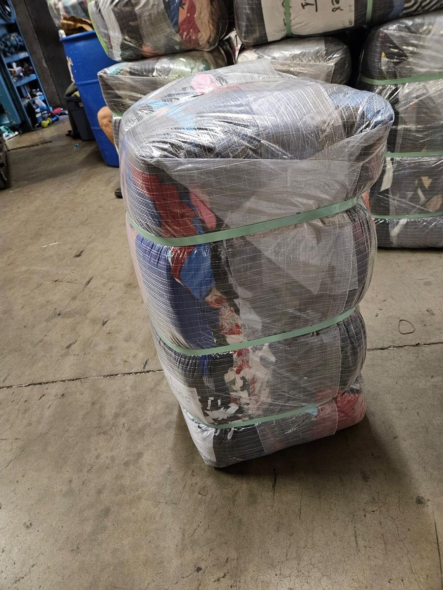
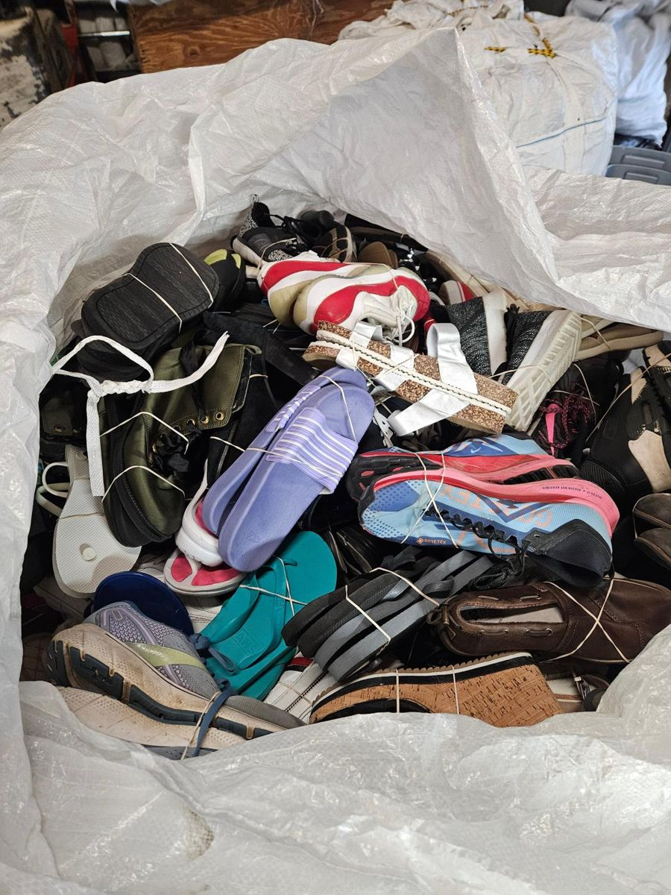
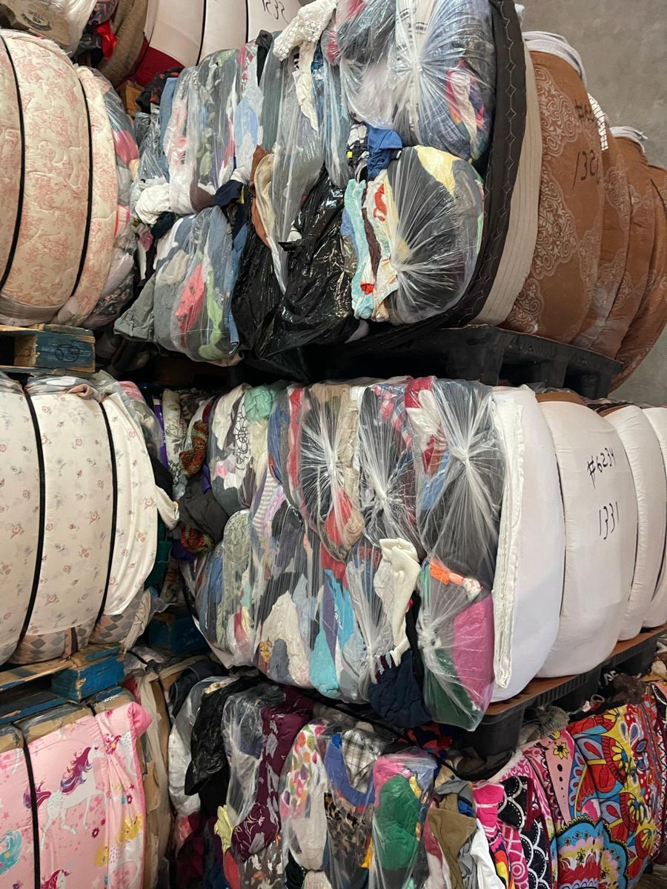

Used clothing bales
Wrapped, strapped bales of mixed used clothing. [Add grades, sizes and bale weight]
Request thisWholesale supply of used clothing, footwear and textile materials.

Wrapped, strapped bales of mixed used clothing. [Add grades, sizes and bale weight]
Request this
Bales stacked on pallets for storage and loading. [Add pallet and container details]
Request this

Sandals, slides, boots and sneakers. [Add grades and packing]
Request this
Send your product type and quantity and we will reply with availability and pricing.
Request a quote